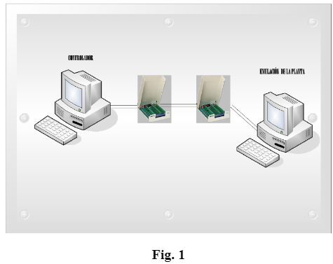

Tarea
1.-Identificación.
2.-Objetivo.
|
El alumno evaluará un control óptimo de horizonte finito para un modelo de alto orden por medio de la técnica Hardware in the Loop. |
3.-Marco Teórico.
|
El desarrollo del marco teórico será dado en el aula por el profesor. El profesor deberá cubrir los siguientes aspectos:
Tarjetas de adquisición recomendadas: USB 6008-09 o PCI. |
4.- Medidas de Seguridad.
|
5.- Reactivos/insumos, materiales/utensilios y equipos.
6.-Procedimiento Para el Desarrollo de la Práctica.
|
1. En esta práctica se desarrolla un sistema básico de Hardware in The loop, mostrado en la Figura 1 de la presente práctica. Primero pruebe la correcta lectura de los canales de entrada y salida usados en ambos módulos de adquisición de datos. 2. Programe un sistema de alto orden (éste será proporcionado por el profesor en clase) en una de las computadoras (tome en cuenta que las tarjetas USB y PCI solo cuentan con dos salidas analógicas) usando Labview para ello. Puede usar comando Matlab en u Matlab Script o usar el Toolkit de Labview de control. Verifique mediante la respuesta al escalón unitario u otra señal de prueba enviada desde la otra computadora (control) la correcta lectura/escritura de los datos. 3. En la computadora destinada para el control, programe un control óptimo en lazo cerrado de horizonte finito. Haga un comparativo de la respuesta obtenida para distintas penalizaciones del control para distintas Q, R y tf, para tareas de estabilización y regulación. 4. Realice un comparativo de los resultados obtenidos mediante la resolución del Halmiltoniano y la ecuación diferencial de Ricatti. 5. Despliegue en la interfaz con el usuario el error de seguimiento, la señal de control, y el estado. 6. Programe el modelo de un sistema no lineal (el péndulo invertido) y contrólelo mediante control óptimo alrededor de su punto de equilibrio estable.  |
7.-Cuestionario.
|
1.- ¿Cuáles son las ventajas entre la emulación de sistemas y la simulación de sistemas de control? Conclusiones: Las anotaciones concluyentes serán realizadas individualmente por los alumnos en el reporte final. |
8.-Bibliografía.
|